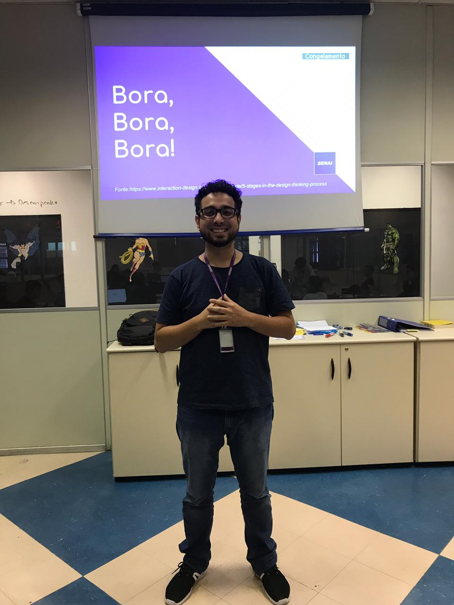

“O software foi um projeto
muito nosso, um sonho
realizado de muitos anos
de amizade/ companheirismo
que engloba toda uma vida
de projetos, que irá ajudar muitas
empresas e muitos funcionários.”

“Sou Carlos, a minha empresa Agora
Vai tem o maior produto que é o
Ponto Digital, que ajudam empresas
que trabalham com Home Office, a
controlar seus funcionários para que
o trabalho que está sendo desenvolvido
por eles seja o melhor possível.”